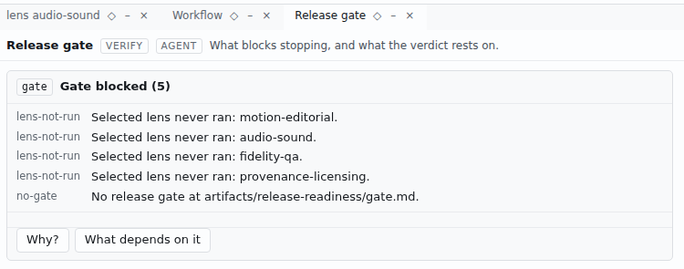
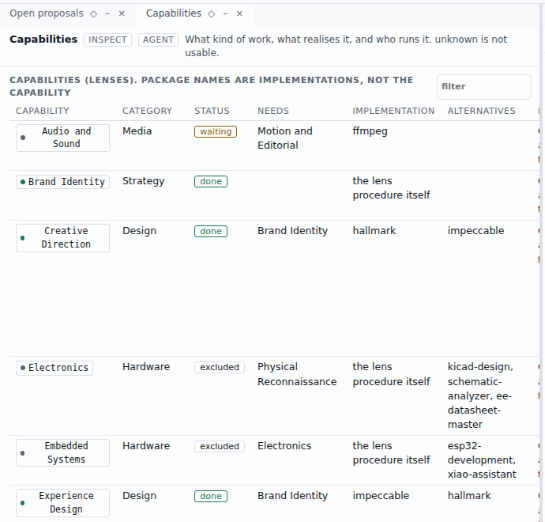

Evidence-gated product completion
Finish the product. Show the evidence.
Coding agents make things fast. Product Actualizer keeps the model they answer to: every claim graded, every artifact citing it, and a gate that can refuse the launch. C2C6
Read the run Replay a worked example Source on GitHub
The source is public to read. No license has been declared, so this page does not invite you to reuse it. C17
00 The short version
01 The hard part moved from making to finishing
Agents have made the first stretch of building fast. The people doing the finishing describe a different job.
“Instructions are not guarantees.”
“The bottleneck isn't building anymore. It's completing.”
Agents left a required file unread in 67.9% of runs, and 80.4% of those runs were misleading about it.
46% of developers do not trust the accuracy of AI tool output, up from 31% a year earlier.
Spec toolkits point an agent from intent to code. Spec Kit had 139,998 GitHub stars on 2026-10-03 C29, and one close reading reports that it produced many repetitive Markdown files to review C28. This page is about what comes after the code: the brand, site, film and copy that make a launch, and whether their sentences are true.
02 One model, five rules
One ledger, seven grades
Every claim about the product carries a grade and a source anyone can re-open. OBSERVED and VERIFIED claims can be published. The rest stay internal. C2
Copy cannot outrun the evidence
A public artifact that cites a claim graded below OBSERVED is rejected. We downgraded a claim in a worked example and the validator refused. We restored it and it passed. C3
Changes make dependents stale
Artifacts record the model version they were built from. When a later decision touches a claim they cite, they are flagged stale, by version comparison and not by memory. C4
Work is capabilities, in an order
Seventeen lenses declare what they read and what they need. Selecting some orders them into waves. C1C5 The tool that does the work is a replaceable executor, and the catalogue says found or unknown, never usable. C20
The agent cannot accept its own work
An agent can report progress and mark work ready for review. Only the owner accepts. When an agent tries, the cockpit returns AUTHORITY_HUMAN. C12
“A prompt is a probabilistic influence on model behavior. A rule is an enforcement mechanism.”
A Show HN post, 2026-06-16 C43
03 Change the model, watch the work go stale
The worked example is Loam, a fictional soil probe. C38 Record a decision, then see which artifacts depend on what it touched.
04 The order of work comes from what each lens needs
Pick the lenses a goal needs. They arrange into waves from their declared needs, and the gate always runs last. C5
Capability, implementation, executor
A lens is the capability: a kind of judgement work. An implementation is a mechanism that can realise it, listed as candidates. The executor is whoever runs it. The three stay separate. C20 On the machine that made this page, ffmpeg was found, and hyperframes, bang-motion and anidoodle were unknown. C20
05 Who may move a request
A typed request stays queued until an executor acknowledges it. The agent moves it forward. Only the owner accepts. C13 In the run that made this page, request R1 passed through every state. C41
06 This page came out of a run
The governed run is stored in the repository: the model with its decisions, the proposals each lens made and how each was ruled on, the history of model versions, and the evidence. C39 The cockpit screenshots on this page were captured from that run. C40


What was run
- The validator refuses a public artifact once a cited claim drops below OBSERVED, and accepts it again when the grade is restored. C3
- The staleness check flags an artifact built from an earlier model version once a later decision touched a claim it cites. C4
- Two worked examples, one software and one hardware, replay as tests. The hardware checks are tested against mutated copies and must fail each one. C15C16
- A clean clone installs, type-checks and builds. Its first test run failed on a race in one of our own browser tests. After the fix, 315 tests passed. C19
- The compiled executable, 85 MB for Linux x86_64, ran with no Bun on the path. C8C21
- Neither the process engine nor the cockpit contains a reference to a model provider's endpoint. C11
What was not verified
The hooks were not run on Codex, Cline, OpenCode or Prime, though the installer has adapters for them. C23 The executable was built for Linux x86_64 only. C21 No release or package has been published. C18 We make no claim about outcomes, speed or adoption.
What the run found about the product itself
07 Who it is for
The change: coding agents made building cheap, so the hard part moved to completing and launching. C31
Technical founders and small teams who already build with a coding agent, have a working product, and have an owner who will read a verdict. Studios that inherit an agent-built product and must hand over what is true and what is not. C33
Developers are already building stopgaps in public: a permission guard, verified spec-driven development, a policy gate. C55
Not for buyers who want an agent to ship without an owner reading the verdict, buyers who need a hosted service, or buyers who need guarantees about code correctness.
08 Questions
- Is this another spec-driven framework?
- Spec toolkits direct an agent from intent to code. C28 Here the unit is the claim with its evidence, and it covers brand, site, film and copy as well as code. C1 We make no claim that it is better at code.
- Does it make my agent's code correct?
- No. It grades claims, cites sources, flags stale work and refuses to pass a gate. C6 Tests still run, and their results become evidence.
- Does it call a model?
- No. Neither the process engine nor the cockpit contains a reference to a model provider's endpoint. C11 Your agents are the executors.
- Will it bloat my context?
- The text the process always loads is 12,195 bytes. The 17 lens files total 160,045 bytes, but selecting lenses reads only their 7,091 bytes of front matter, and the hook engine denies a read of a lens body until that lens starts. C44C45
- Which agents does it work with?
- The installer has adapters for Claude Code, Codex, Cline, OpenCode and Prime. C23 Skills are plain Markdown files with front matter. C22 Codex and Cursor both document skills as a directory with a SKILL.md file. C32
- Can I use the code?
- You can read it. No license has been declared yet. C17 When the owner declares one, this page will say so.
- Is it released?
- No release or package has been published. C18
- Where does the name come from?
- To actualize is to make real, and the command line verb is actualize. Product Actualizer Architect is the internal descriptor.
09 Replay it
10 The ledger behind this page
Every claim cited above, with its grade and a source you can re-open. Built from model@5 by the same validator the demos use.
| id | claim | grade | source |
|---|---|---|---|
| C1 | The repository ships 17 lens skills plus a router skill and a cockpit tool skill, and `actualize lenses` lists the 17 lenses | OBSERVED | skills/*/SKILL.md (19 directories); evidence/recon-software/executed-checks-binary.txt |
| C2 | The model defines seven evidence grades and limits public copy to OBSERVED and VERIFIED | OBSERVED | product-model/SCHEMA.md "Evidence grades"; hooks/src/lib/md.mjs:18-19 |
| C3 | The validator rejects a public artifact that cites a claim graded REPORTED and accepts the same artifact when the claim is OBSERVED | VERIFIED | evidence/recon-software/executed-checks-validator.txt checks 1 and 2 |
| C4 | An artifact built from an earlier model version is flagged stale when a later decision touched a claim it cites | VERIFIED | evidence/recon-software/executed-checks-validator.txt checks 3 and 4; test:python3 tests/check.py |
| C5 | Selecting lenses orders them into dependency waves; this run's selection of 11 lenses produced four waves | VERIFIED | evidence/recon-software/select-waves.json |
| C6 | The gate blocks the end of a run while a lens is running, a reconciliation is open, proposals are open, artifacts are stale or invalid, or no current release gate exists | VERIFIED | hooks/src/process.mjs:54-90; test:bun test tests/hooks/replay.test.mjs (evidence/recon-software/full-suite-after-fix.log) |
| C8 | The compiled 85 MB executable ran `lenses`, `begin`, and `status` on Linux x86_64 with no Bun on PATH | VERIFIED | evidence/recon-software/executed-checks-binary.txt |
| C11 | Neither hooks/ nor cockpit/ contains a reference to an LLM provider endpoint, and the Work Terminal answered "show the workflow" from local rules | VERIFIED | evidence/recon-software/executed-checks-no-llm.txt; cockpit/server/terminal.ts:1-4; evidence/dogfood/01-show-the-workflow.png |
| C12 | When an agent tries to accept a work request, the cockpit returns AUTHORITY_HUMAN | VERIFIED | cockpit/server/control.ts:93; tests/cockpit/workbench.transport.test.ts:55 (evidence/recon-software/full-suite-after-fix.log) |
| C13 | A typed work request stays queued until an executor acknowledges it; R1 was queued, then acknowledged, in this run | OBSERVED | cockpit/protocol/work.ts:7-21; actualize work requests, 2026-10-03 |
| C14 | The Work Terminal did not understand "research and establish the market position for Product Actualizer Architect" and queued nothing; the `request:` prefix queued it as R1 | OBSERVED | evidence/dogfood/02-request-queued.png |
| C15 | Both worked examples, Loam (software and a sensor) and Mote (hardware), replay through tests/check.py without error | VERIFIED | test:python3 tests/check.py |
| C16 | The hardware checks are tested against mutated copies of the Mote walkthrough and must fail each mutation | VERIFIED | tests/check.py:585; test:python3 tests/check.py |
| C17 | The repository is public and has no LICENSE file | OBSERVED | gh repo view SPRIME01/Product-Actualizer (licenseInfo null), 2026-10-03; no LICENSE* in the tree |
| C18 | No release or package has been published, and package.json is marked private | OBSERVED | package.json:3; gh release list SPRIME01/Product-Actualizer (empty), 2026-10-03 |
| C19 | The first clean-clone run of bun test had 3 failures from a race in tests/cockpit/workbench.e2e.test.ts; after the fix, 315 tests passed with 0 failures | OBSERVED | evidence/recon-software/clean-checkout.txt; evidence/recon-software/full-suite-after-fix.log |
| C20 | The capability catalogue lists ffmpeg as found and hyperframes, bang-motion, and anidoodle as unknown on this machine, and says unknown is not usable | OBSERVED | evidence/dogfood/capabilities-before.json |
| C21 | Only a Linux x86_64 binary has been built and exercised | OBSERVED | evidence/recon-software/executed-checks-binary.txt |
| C22 | Skills are plain Markdown files with name, description, reads, needs, and executes_with front matter | OBSERVED | skills/*/SKILL.md |
| C23 | The hooks installer has adapters for Claude Code, Codex, Cline, OpenCode, and Prime (also addressed as pi) | OBSERVED | hooks/install.mjs:3,13 (read, not run) |
| C26 | The Stack Overflow 2025 Developer Survey press release states that 84% of respondents use or plan to use AI tools and 46% do not trust the accuracy of their output, up from 31% the year before | OBSERVED | https://stackoverflow.co/company/press/archive/stack-overflow-2025-developer-survey/@2026-10-03 (evidence/brand/market-research.md S3) |
| C27 | arXiv 2609.20812 states that in its OverclaimBench runs agents left at least one required file unread in 67.9% of runs, and 80.4% of those incomplete runs were misleading | OBSERVED | https://arxiv.org/abs/2609.20812@2026-10-03 (S4) |
| C28 | Martin Fowler's site (Böckeler, 2025-10-15) distinguishes spec-first, spec-anchored, and spec-as-source development and reports that spec-kit produced many repetitive Markdown files to review | OBSERVED | https://martinfowler.com/articles/exploring-gen-ai/sdd-3-tools.html@2026-10-03 (S1) |
| C29 | On 2026-10-03 the GitHub repositories github/spec-kit, Fission-AI/OpenSpec, and bmad-code-org/BMAD-METHOD had 139,998, 70,977, and 53,753 stars | OBSERVED | `gh api` on each repository, 2026-10-03 (S14) |
| C31 | A DEV Community post of 2026-09-27 states that agents made the first 80% of building fast and that the bottleneck is now completing | OBSERVED | https://dev.to/kentkandiforge/the-last-mile-problem-in-agentic-development-5768@2026-10-03 (S2) |
| C32 | The Codex and Cursor documentation both describe skills as a directory with a SKILL.md file under an open agent skills standard | OBSERVED | https://developers.openai.com/codex/skills@2026-10-03; https://cursor.com/docs/skills@2026-10-03 (S13) |
| C33 | Studios advertise takeover of AI-built apps, naming chat-as-source-of-truth and handoff gaps | OBSERVED | https://hunchbite.com/hire-developer-ai-app@2026-10-03; https://kitrum.com/services/ai-code-handoff-services/@2026-10-03 (S12) |
| C38 | Loam and Mote are fictional products used as test fixtures and worked examples, not customers | OBSERVED | README.md:30-31; tests/walkthrough-mote/TRANSCRIPT.md:3 |
| C39 | The governed run for this validation, with its model, proposals, history, and evidence, is stored in the repository's actualize/ directory | OBSERVED | actualize/ (product-model.md, proposals.md, history/, evidence/), 2026-10-03 |
| C40 | The cockpit screenshots in actualize/evidence/dogfood/ were captured from the cockpit running against this run | OBSERVED | actualize/evidence/dogfood/01-show-the-workflow.png; 02-request-queued.png; 03-ready-for-review.png; 04-accepted.png |
| C41 | Work request R1 moved queued, acknowledged, running, produced, ready_for_review, accepted in this run, and its history records who moved it each time | OBSERVED | actualize/evidence/dogfood/R1-history.json |
| C43 | A Hacker News Show HN post of 2026-06-16 (item 48558502) states "Instructions are not guarantees." and "A prompt is a probabilistic influence on model behavior. A rule is an enforcement mechanism." | OBSERVED | https://news.ycombinator.com/item?id=48558502@2026-10-03; text matched through hacker-news.firebaseio.com/v0/item/48558502.json |
| C44 | The text the process always loads is 12,195 bytes (router 4,096 plus SCHEMA 8,099); the 17 lens files total 160,045 bytes, and their front matter, which is all that lens selection reads, totals 7,091 bytes | VERIFIED | evidence/recon-software/executed-checks-context-size.txt |
| C45 | The hook engine denies a read of a lens body until lens start has been run for that lens | OBSERVED | hooks/src/engine.mjs:185 |
| C55 | Hacker News items 47343927 (2026-03-11, 127 points, 94 comments), 47197595 (2026-02-28, 211 points, 118 comments) and 48558502 (2026-06-16, 1 point, 0 comments) are posts about a permission guard, verified spec-driven development, and a policy gate for coding agents | OBSERVED | hacker-news.firebaseio.com/v0/item/<id>.json for each id, 2026-10-03 |